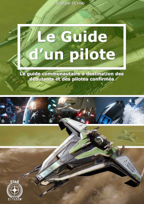

Le Guide d'un Pilote - Le tutoriel / tutorial destiné aux débutants comme aux joueurs confirmés.
Ceci n'est pas la page "normale", veuillez accepter ou refuser le cookie et recharger la page, merci.
Bienvenue sur ce site qui héberge et permet de visionner le manuel complet et en français de Star Citizen créé par l'auteur DCVolo, ce document vous permet comme à l'école, d'apprendre à jouer, à piloter, comprendre le fonctionnement des mécanique et autres détails des nombreux systèmes que propose SC.
Mieux qu'un tutorial (tuto) c'est un guide en forme de manuel qui peut être téléchargé (Download) pour une utilisation hors ligne. Je vous déconseille néanmoins de l'imprimer car le document étant mis-à-jour (MAJ / Update) principalement une à deux fois par trimestre suivant le nombre de patch et d'ajouts que propose Star Citizen.
Le document, vous offre aussi un accès aux nombreux outils communautaires créés par la communauté de fans de Star Citizen tel que Erkul.games et son comparateur Damage Per Second DPS et composants Cooler / Power / weapons / thrusters / shields. SC Trading Route Finder (réalisé par Kamille) et Gallog qui servent tout deux à la logistique galactique de trading et des routes afin d'optimiser le rendement de vos gains lorsque vous marchander, faites de la vente et achat ou même du minage. Mais aussi de SPAT pour Ship Performance Analysis Tool qui sert à comparer des vaisseaux entre eux en terme de possibilité et non pas uniquement de propriété, grâce à l'organisation LiS LEGACY INSTRUCTIONAL SERIES vous disposez d'un outil puissant afin de connaitre avec précision les capacitées de votre vaisseau.
La communauté posséde aussi des vidéastes, influenceurs et acteurs qui animent les réseaux sociaux et plus particulièrement la communauté française / francophone. On pouvait à l'époque retrouver Alphacast qui était le premier Streamer et YouTubeur, remplacé depuis par Frederic Molas alias le Joueur du Grenier qui fut longtemps le premier du top 5 du referal code le plus utilisé. Mais aussi de nombreux autres acteurs tel que Terada, Hugo Lisoir, Zvonimir, Gaunt, L42, Pulsar 42, Touriste galactique, SamSC, Schneider, Star Pirate, SCFR, JVC, Millenium.
Star Citizen (SC) sur PC est une simulation spatiale (Space Sim) massivement multijoueur (MMO - Massive Multiplier Online) qui se déroule au 30ème siècle.
Un jeu excessivement innovant qui poussera les joueurs à jouer d'exploration, d'investigation, de manger, boire, faire votre vie, mener vos combat. À une époque où l'humanité a déjà bien conquis l'espace et continu son expansion dans les étoiles. Vous pouvez devenir simple membre d'équipage d'un vaisseau, ou bien encore chasseur de prime, pirate, mercenaire, mineur, commerçant, explorateur, médecin, pilote de course. Vous aurez la possibilité de visiter une centaine de systèmes planétaires et même d'arpenter toutes les stations spatiales et les planètes et tout cela à pied.
Derrière tout ça, le studio Cloud Imperium Games CIG filiale de Cloud Imperium. Associé à des partenaires tel que le Studio Turbulent qui s'occupe du site web RSI RobertsSpaceIndustries, qui est la plateforme principale du studio. Mais aussi lors d'évènement avec des partenaires économique tel que Intel pour ses SSD Optane et son package Sabre Raven, AMD pour la vente de ses cartes graphiques GPU et son package Mustang Omega, Saitek pour son prototype de périphériques souris clavier joystick aux couleurs du jeu pouvant s'emboiter les uns les autres et pour terminer Faceware pour son prototype Webcam diposant d'un motion sensor utile pour la Face Over Internet Protocol (FOIP) qui est un système de face tracking permettant le suivi du visage mais aussi de reproduire les expressions faciales exprimés par le joueur.
Le pilote sachant piloter
Le Guide d'un pilote initialement prévu pour ne couvrir que l'apprentissage du modèle de vol de Star Citizen et ses nombreuses mécanique s'est vu trimestre après trimestre de mise à jour et patchs devenir de plus en plus complet. Le jeu proposant toujours plus de nouvelles fonctionalités le document s'est adapté afin de les y inclure et aider les débutants et autres joueurs qui nécessitent une plateforme d'aide pour leur propre organisation.
Ce manuel comprend donc les explications sur les options de jeu (Game Settings), options graphiques (Graphic options), options audio, options de contrôle (Controls), et raccourcis clavier (Keybindings). Fourni des outils communautaires afin d'optimiser votre vaisseau et sélectionner facilement celui qui vous intéresse le plus. Des modes de jeu tel que Theater Of War et Arena Commander (Battle Royal, Squadron Battle, Free Flight, Classic Race, Pirate Swarm, Vanduul Swarm), la modification d'un vaisseau au travers de ses composants tel que les propulseurs de manœuvre, les propulseurs principaux, le carburant, le moteur de saut quantique (Quantum Drive), le refroidisseur (Cooler), le générateur d'énergie (Power Plant) et les boucliers (Shields). Star Citizen disposant d'un nombre différent d'armes assez incroyable celles-ci sont toutes décrite, on retrouve donc les armes laser, ballistique, mais aussi à Distorsion, les armes neutrons, il y a aussi les EMP, les lances-roquettes, les armes tachyons et scatter-gun.
Les missiles ont un impact assez important durant un combat et peuvent changer la donne, il faut bien comprendre le système de grille, rack, et les différentes tailles, tel qu'un missile de taille supérieur à 5 n'est plus un missile mais une torpille.
Et lorsqu'on parle des missiles, il ne faut pas oublier les contremesures qui servent à détourner l'attention d'un missile et d'empêcher la traque ou même le ciblage à travers de composants furtif.
Des explications poussées sur le modèle de vol (Flight Model - FM) aussi bien dans l'espace et donc de manière générale qu'en atmosphère, l'aérodynamisme et l'importance du SDF Signed Distance Field sur la physique mais aussi les boucliers, la rentrée atmosphérique et donc les VFX que sont les effets spéciaux. Ce modèle de vol Newtonien permet une approximation aussi proche du réel que le permet la technologie actuelle dans un MMO de cette envergure et ce niveau de détail et qualité global.
Le scanner, le radar, la Starmap et toutes les mécaniques qui y sont liées peuvent s'avérer complexe et lourde mais il n'en est rien, c'est simple à apprendre et comprendre. Les émissions de signaux IR EM et CS pour infrared / infrarouge, Electromagnetique, Cross-Section / chassis sont aussi expliquées dans des chapitres dédiés.
Les différentes catégories de vaisseaux permettent aussi d'avoir une idée générale de ce que vous devez attendre d'un type de vaisseau, tel que les monoplace, multicrew, chasseur, intercepteur, interdicteur, bombardier, transporteur, véhicule, véhicule de course de compétition.
Les condition météorologique peuvent aussi impacter le modèle de vol atmosphérique mais aussi l'aérodynamisme, la portance, le poids, la masse, la vélocité, la force de gravité ou la pesanteur, votre inertie, la force de coriolis.
Des mécaniques essentielle pour le combat tel que la compréhension de l'armement et ses mécaniques, armes fixe, arme gimbal, arme gimbal-auto en assistance, mais aussi l'ESP , les cas d'utilisation du Lag et Lead PIP, le mode Vjoy, Quantum Snare et Quantum Dampening, le Look Ahead Mode LAM et les propriétés de l'armure de vaisseau.
Et tout cela aura un impact sur l'usure de vos composants et du coup aussi sur le combat haute vitesse (high speed combat).
La partie FPS à pied en vue première personne ou en caméra troisème personne
la partie First Person Shooter ou vue à la première personne concerne absoluement toute les mécaniques de gameplay qui sont propre à votre avatar / personnage. Cela ne concerne pas la partie PU pour Persitant Universe qui elle concerne spécifiquement les fonctionnalités réservées à l'univers persistant.
Vous y retrouverez donc le système d'intéraction ou Interaction System qui vous offre la possibilité d'intéragir avec votre environement, faire des choix, modifier des objets, etc. Toujours dans la même optique, lorsque vous effectuez des choix, cela fait parti de la mécanique de Personnal Innter Thought c'est à dire de la pensée intérieur ou pensée personelle, les choix disponible apparaissent et vous n'avez qu'à selectionner et valider celui qui vous convient.
Les différents déplacements, la mobilité, les mouvements, que ce soit à pied ou en sortie extra-véhiculaire la position et les animations qui seront générées dépendront en réalité de l'environement dans lequel vous évoluez selon la physique du terrain. Le body Dragging ou déplacement / trainement de corps permet aux médecin, mais aussi d'autres métiers, de déplacer des corps en les faisant glisser. Et comme tout MMO qui se respecte un nombre impressionannt d'emote différentes permettent d'exprimer vos sentiments à travers le jeu.
les armures personnelles ou encore armure FPS sont des vêtements qui sont à la fois des items et des composants car celles-ci sont décomposées en différentes parties qui va de la tête aux jambes en passant par les bras et le torse. Ces armures ont des propriétés et permettent de remplir des tâches ainsi que de correspondre à des cadres de métiers qui pourraient avoir des points communs. Les vêtements, habits, tee-shirt jeans pantalon gants et chaussures ainsi que les combinaisons permettent aux joueurs de personnaliser l'apprence vestimentaire de leur avatar. Les vêtements ont un impact sur votre réputation et perception par les autres joueurs et PNJ / NPC.
Les armes FPS ou personnelles, tout comme les armes de vaisseaux disposent de catégories, taille et capacités propres qui les différencie, tel que les fusil à pompe shotgun, pistolet mitrailleur SMG, fusil mitrailleur LMG, fusil de précision (Sniper riffle) et arme de point / pistolet (pistol). Il existe aussi des armes plus exotiques et armes aliens, mais aussi des lance roquette et lance missile. Que les armes soient des armes lasers, des armes ballistique ou autre vous pourrez leur appliquer des modifications au travers d'accésoires d'armes tel que des silencieux, des viseurs / lunettes, mais aussi des lampes ou laser de visée.
Les utilitaires de soin Medpen Med pen ou medi pack ainsi que les capsule à injection d'oxygene comme les oxypen permettent de disposer de soin assez rapidement, même si cela reste des soins légers. L'outil Multi-tool permet à la fois de faire du minage, déplacer des caisses et objets lourd mais aussi de découper. En effet le composant multi tool minage sert à miner, le composant multi tool anti grav sert à déplacer des caisses lourdes par antigravité et le dernier composant permet lui de souder et découper des parties métalique afin de réparer ou découper une pièce métalique.
Le combat rapproché ou combat au corps à corps permet de maitriser votre ennemi, le mettre à terre et le rouer de coups, vous pouvez aussi esquiver et vous défendre afin de bloquer et parer des coups.
L'Actor Status ou Player Status permet d'avoir un aperçu de l'état de l'avatar / personnage du joueur en temps réel tel que son rythme cardique, son niveau de faim, son niveau de soif, nutrition et hydratation, sa température corporelle, température ambiante, les effets nutritionnels, la réserve d'oxygène et sa santé globale.
Le PU pour Univers Persistant ou Persistent Universe
L'univers persistant ou persistent universe est la partie principale du jeu car bien que le jeu dispose de module tel que Star Marine, Arena Commander ou Theater Of War, c'est bien dans ce premier que tout va se passer. C'est dans l'univers persistant que la partie MMO fonctionne au travers de technologies tel que le Server-meshing, Bind culling, Object Container Streaming OCS ou Server Object Container Streaming SOCS, un netcode et un tickrate adapté au jeu à hauteur de 30Hz.
Vos premiers pas en tant que débutant, votre première connexion, sera le moment pour vous de comprendre et d'apprendre à maitriser les différentes mécanique de gameplay de manière unifié car elles seront touutes disponibles dans ce module-ci qui regroupe tous les autres et bien plus encore. L'apprentissage au travers du manuel Le Guide d'un Pilote vous offre une aide ou un support si vous décidez à votre tour d'aider les autres joueurs. Ce document sert donc de référence à l'entièreté du jeu.
Le mobiGlas est le premier outil, une petite montre holographique, qui diffère avec les autres modules car elle n'a de réelle utilité que dans l'univers persistant. De nombreuses application sont disponible, le menu principal affiche les informations de manière général, l'application commlink permet de discuter et communiquer avec les autres joueurs et le jeu, l'application vehicule loadout manager permet de modifier son véhicule ou vaisseau, l'equipement manager permet de modifier l'équipement que votre avatar / personnage porte sur lui, que cela soit des armes ou votre armure. Il y a aussi l'aplication Skyline qui est en fait la starmap du jeu c'est à dire le google map de Star Citizen. L'application journal qui est le journal d'information vous donnant des informations lié au fonctionnement du jeu. Et le contracts manager qui permet de selectionner et choisir une mission parmis plusieurs missions proposées.
Il existe par ailleurs des missions qui peuvent être partagées, mais aussi des missions personelles. Si une mission est ratée ce n'est pas forcément un bug mais le fait que l'objectif peut être réalisé par quelqu'un d'autre, ou même que la mission peut créer une contremission ou mission opposée. Ce genre de mission propose à un autre joueur un objectif opposé au votre. Afin de créer du défi et de l'intéraction entre joueurs. Il existe aussi des missions scénarisées via des donneurs de mission ou Mission Giver ou les personnages sont animés via motion capture et doublé par des acteurs.
Pour ce qui est du côté social, vous disposez d'une liste d'amis, de Spectrum, des organisations et du tchat / chat, le fameux canal textuel.
Le système de réputation permet de gagner la confiance de certains personnage, d'afiner votre rang en tant que citoyen modèle, civil ou pirate au travers de votre criminalité (CrimeStat).
Le CrimeStat peut être perdu grâce à l'utilsation d'une cryptokey / crypto-key, celle-ci vous permet de supprimer vos crimes en piratant un ordinateur qui contient la base de données des crimes commis.
Le système de loi donne les droits et devoirs aux citoyens et civils de l'UEE (United Empire of Earth) qu'est l'empire humain. Il existe des lois locale et loi qui s'appliquent à de plus grande zones. Les lois Xi'an / Xian ou Banu seront différentes des lois humaines ou du moins pourront l'être mais le fonctionnement global lui sera différent.
Dans Star Citizen vous pourrez choisir le métier qui vous convient, vous êtes libre de faire ce que vous voulez, vous pouvez très bien devenir marchand, être médecin, choisir un métier dans le trading, le transport, devenir mineur, être un chasseur de prime ou un mercenaire, ou finalement un criminal et devenir pirate ou contrebandier.
Star Citizen au travers de l'univers persistant ou persistent universe PU vous offrira de nombreux lieux à explorer (pratique pour le métier d'explorateur ou organisateur de voyages) tel que des villes (New Babbage, Lorville ou encore Area 18) sur microTech, Hurston et Arccorp. Mais aussi de nombreuses station Rest Stop ou Rest & relax qui permettent de définir un nouveau point de réapparition ou point de respawn. Ces villes et stations générées procéduralement, via l'outil de génération procédurale, offrent aux joueurs des hub où se réunir, se rencontrer, réparer votre vaisseau, modifier votre vaisseau, dans les spatioport ou spaceport vous pourrez acheter ou louer en location de nouveaux vaisseaux avec la monnaie du jeu. Les villes et stations offrent aussi des zones de ventes et d'achat comme les armes, armures, vêtements / habits, la possibilité de revendre votre cargaison ou session de minage. De refaire le plein de carburant de votre vaisseau.
Les assurances des vaisseaux sur plusieurs mois ou ans / années sont là pour couvrir les incidents sans trop impacter, mais correctement, votre session de jeu.
Un astre, planète ou lune, peut posséder des grottes, cavernes, ou caves. Elles sont elles aussi, ces grottes / cavernes, générée procéduralement et proposent des missions d'investigations et autres types de missions. Vous pourrez y miner grâce au multi tool mais aussi.. vous y perdre.